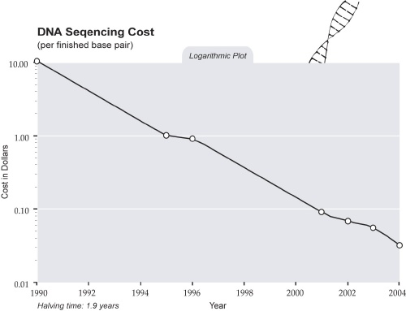

Question 9: Will Intelligence Enhancement Change the Picture?
Question 9 focuses on human intelligence enhancement, sometimes called IA (Intelligence Amplification). Several sub-questions explore one approach to intelligence enhancement, namely embryo selection, which relies on existing technologies and well-understood biology. Numerous other possible approaches exist, such as brain training games, intelligence-enhancing pharmaceuticals, and brain-computer interfaces. Any type of IA is important, because it could accelerate technological progress.
Gene sequencing costs have been dropping exponentially for some time. Here is a graph (from Kurzweil (2005)) that shows the trend from 1990 to 2004:

Embryo selection
for intelligence would depend upon the availability and cost of
sequenced genomes. When will it be possible to sequence an entire
human genome for less than $1000?
Claim: George Church, a professor of genetics and director
of the center for computational genetics at Harvard, said the
initial PGP data set will include DNA sequence information on 50,000
exons, and predicted that scientists will reach the $1,000 human
genome next year: "You guys can hold me to this," he said.
Implication: A $1,000
genome is imminent.
Source: Genome Web. "PGP to Publish
Initial Data Sets Next Month As Church Predicts $1,000 Genome in
2009". 23 September 2008.
<http://www.genomeweb.com/sequencing/pgp-publish-initial-data-sets-next-month-church-predicts-1000-genome-2009>
Claim:
The first human genome cost
either $3 billion (Human Genome Project) or $300 million (Celera
Genomics) in 2001, James Watson's genome cost $2 million in 2007,
and Applied Biosystems sequenced a human genome for $60,000 in two
weeks in March 2008. One company, Intelligent
Bio-systems, has claimed they will be able to provide $5,000
genomes by the end of 2008.
Implication: The number of human
genomes we can sequence for a fixed cost has been increasing at a
sharp exponential, often exceeding earlier expectations.
Sources:
Chu, Wai Lang. "Applied Bio sequences a human genome for
$60,000." LabTechnologist.com. 18 Mar. 2008.
<http://www.labtechnologist.com/products/applied-bio-sequences-a-human-genome-for-60-000>.
Singer, Emily. "The $2 Million Genome." Technology Review. 1 June
2007. Massachusetts Institute of Technology.
<http://www.technologyreview.com/biotech/18809/>.
Singer, Emily. "Five Thousand Bucks for Your Genome." Technology
Review. 6 October 2008. Massachusetts Institute of Technology.
<http://www.technologyreview.com/biomedicine/21466/>
Claim:
The cost of gene sequencing (per base pair) has been decreasing
exponentially since 1970.
Implication:
Unless something changes, exponential growth in capability will
probably continue into the future.
Source:
Shendure, Jay, Robi D. Mitra, Chris Varma, and George M.
Church.
"Advanced Sequencing Technologies: Methods and
Goals." Nature Reviews Genetics 5 (2004): 335-44.
<http://www.nature.com/nrg/journal/v5/n5/abs/nrg1325_fs.html>.
Claim:
The NHGRI, a government institute, has awarded grants to researchers
with the goal of reducing sequencing costs to $1,000/human genome by
2014.
Implication:
A price of $1,000 per genome is a viable research goal in the near
term and is already being actively funded.
Source:
Genome Web. "With $100K Genome in Reach, NHGRI Focuses Advanced-Sequencing Program on
$1,000 Goal." 2 September 2008.
<http://www.genomeweb.com/sequencing/100k-genome-reach-nhgri-focuses-advanced-sequencing-program-1000-goal>.
Claim:
23andMe, a private company, tests for 600,000 single nucleotide
polymorphisms (SNPs) in private individuals for $399.
Implication:
There is a large consumer demand for genomics, so research in this
area will continue to be heavily funded.
Source: "23
and Me." 24 July 2008. Retrieved 9 Aug. 2008.
<https://www.23andme.com/>.